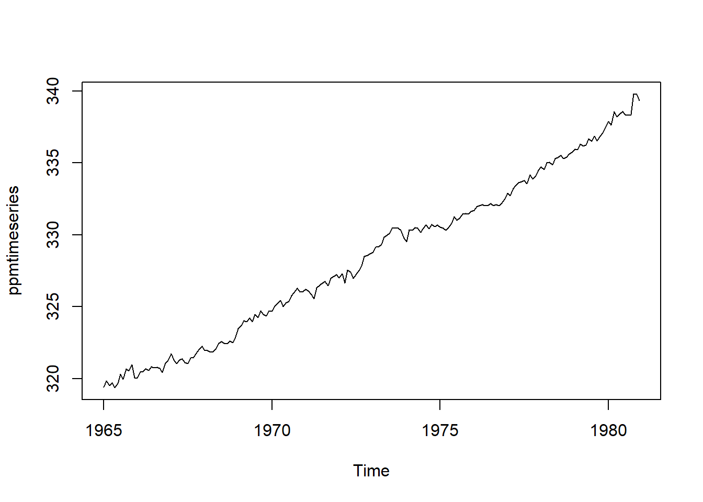
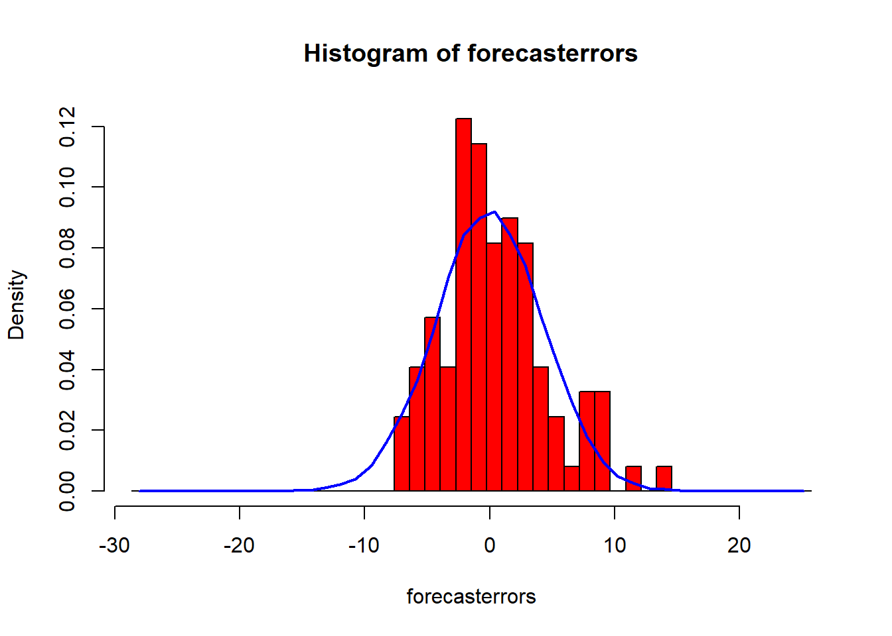
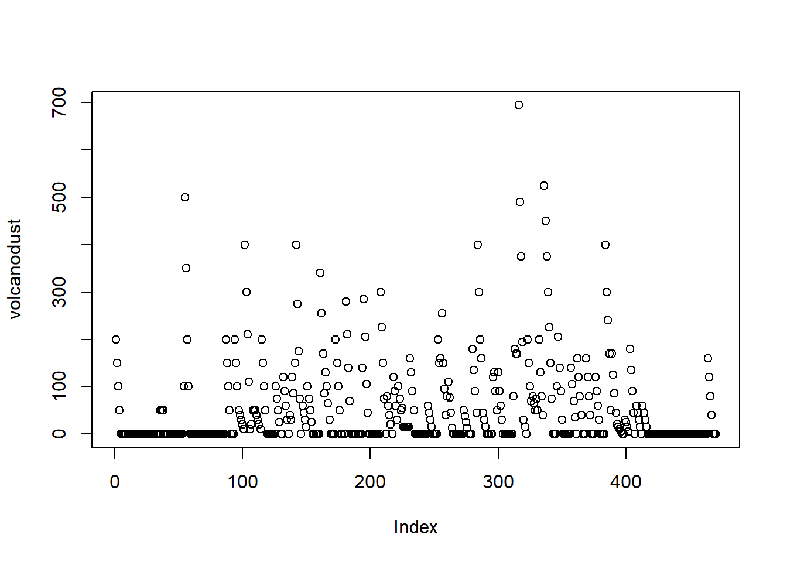
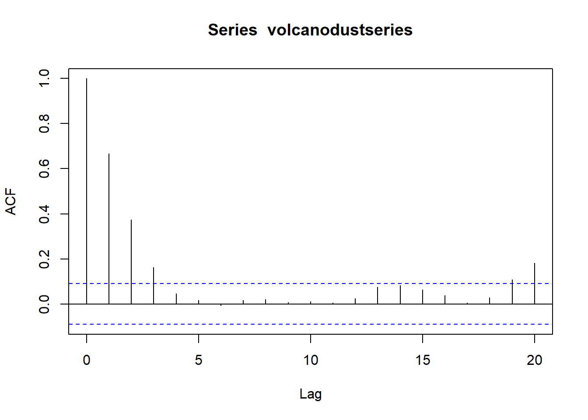
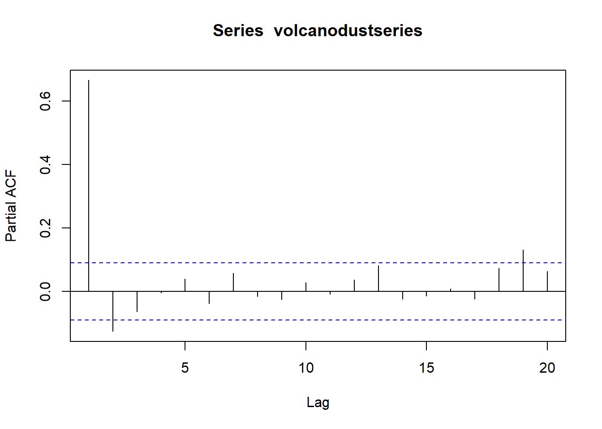
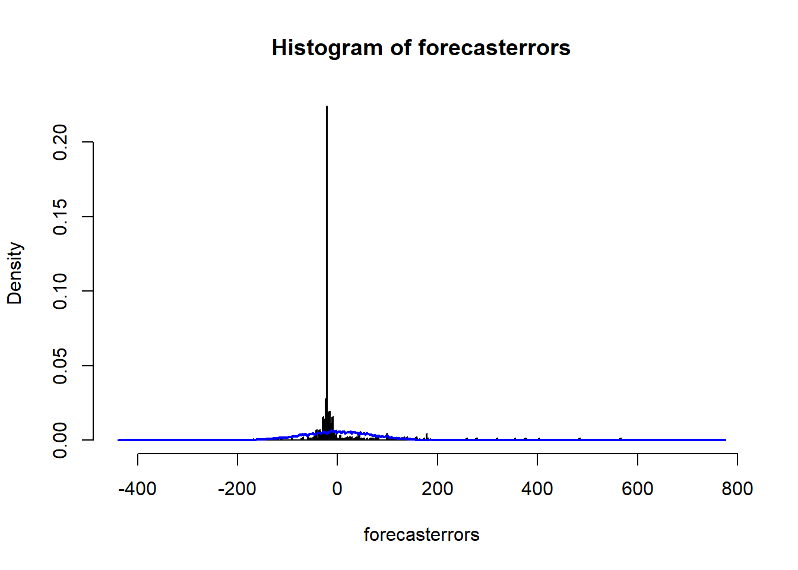

Time Series Analysis
Lizzie
Suggested Reading:
Chapter 12 from: Legendre, P. and L. Legendre. 2012. Numerical Ecology. Elsevier. [link] (https://ac.els-cdn.com/B9780444538680500125/1-s2.0-B9780444538680500125-main.pdf?_tid=f5eaeb54-d142-11e7-bee5-00000aab0f6b&acdnat=1511547298_9eabfd069eba80f333a2bc8774adb524)
Helpful Resources:
Cochlan, A. Little Book of R for Time Series. 2017. link
Hyndman, R. CRAN Task View: Time Series. link
Hyndman, R. Time Series Data Library (TSDL). link
National Ecological Observatory Network (NEON) Data Skills. link
National Institute of Standards and Technology (NIST/SEMATECH). Engineering Statistics Handbook. 2012. link
Key Points
Definition
A time series is a sequence of successive values representing a variable measured at equally spaced time intervals.
Assumptions
- ordered (non-random) sequence
- measurements taken at equally spaced time intervals
Purpose
- identify and describe the nature, internal structure that yield the observed data
- e.g., autocorrelation, trend, seasonal variation, etc.
- fit a model to forecast
- predict future values based on the character of the observed values’ sequence
Identifying Patterns
Pattern analysis: systematic pattern vs. random noise (error)
- filter out noise to reveal pattern
Trend analysis: the trend is a general linear or nonlinear component that does not repeat in the sampled time range
- smoothing: averaging the data locally to cancel out nonsystematic variability between individual observations
- moving average (MA): most common method; replaces each element of the series with either the simple or weighted average (or unweighted median) of n surrounding elements; n is the width of the smoothing “window”
- distance-weighted least squares smoothing or negative exponentially weighted smoothing: lesson common methods, applicable when measurement errors are large; filter out noise and convert data into smooth curves that are relatively unbiased by outliers
- bicubic points: applicable when a series has a few points that are systematically distributed
- fitting function
- monotonous linear time series: linear function
- monotonous nonlinear: transform data using logarithmic, exponential, or polynomial function to remove nonlinearity
Seasonality analysis: seasonality is similar to trend, except the component repeats in systematic intervals over time
- defined as correlational dependency of order k between each ith element of the series and the (i-k)th element (Kendall, 1976); measured by autocorrelation (i.e., correlation between the two terms)
- k = lag: if measurement error is not too large, seasonality emerges in the series as a pattern repeating every k elements
- autocorrelation function (ACF): serial correlation coefficents with their standard errors for successive lags in a specifed range of lags; displayed in autocorrelation correlogram (autocorrelogram)
- Note: autocorrelations for consecutive lags are interdependent
- partial autocorrelation function (PACF): extension of autocorrelation that removes dependence on (or autocorrelations among) elements within a lag
- Note: If the lag is 1, there are no intermediate elements within the lag; therefore, the partial autocorrelation equals the autocorrelation. The partial autocorrelation may provides a “cleaner” picture of serial dependencies for individual lags, unconfounded by other serial dependencies.
- Removing serial dependency: to remove serial dependency within a specific lag, replace each ith element of the series with the difference from the (i-k)th element
- two reasons for such transformations
- identify hidden nature of seasonal dependencies in the series; removing some of the autocorrelations will change other auto correlations, eliminating them or making other seasonalities more salient
- to make the series stationary, which is necessary for ARIMA (autoregressive integrated moving average) and other models
Multiplicative seasonality: data display seasonality and trend
Analysis Examples
Three time-series datasets:
Atmospheric CO2 levels (ppm) measured at Mauna Loa from 1965 to 1980
Total annual rainfall (in) measured in London from 1813 to 1912 (“http://robjhyndman.com/tsdldata/hurst/precip1.dat)
Volcanic dust veil index (measure of the environemtal impact of volcanic eruptions’ release of dust and aerosols) in the northern hemisphere, measured from 1500 to 1969 (http://robjhyndman.com/tsdldata/annual/dvi.dat)
Read time series data
ppm <- read.csv("data/ppmmaunaloa19651980.csv")Store data as a time-series object, specifying frequency and start.
ppmtimeseries <- ts(ppm, frequency=12, start=c(1965))
ppmtimeseries## Jan Feb Mar Apr May Jun Jul Aug Sep Oct
## 1965 319.32 320.36 320.82 322.06 322.17 321.95 321.20 318.81 317.82 317.37
## 1966 319.94 320.98 321.81 323.03 323.36 323.11 321.65 319.64 317.86 317.25
## 1967 321.65 321.81 322.36 323.67 324.17 323.39 321.93 320.29 318.58 318.60
## 1968 321.88 322.47 323.17 324.23 324.88 324.75 323.47 321.34 319.56 319.45
## 1969 323.40 324.21 325.33 326.31 327.01 326.24 325.37 323.12 321.85 321.31
## 1970 324.60 325.57 326.55 327.80 327.80 327.54 326.28 324.63 323.12 323.11
## 1971 326.12 326.61 327.16 327.92 329.14 328.80 327.52 325.62 323.61 323.80
## 1972 326.93 327.83 327.95 329.91 330.22 329.25 328.11 326.39 324.97 325.32
## 1973 328.73 329.69 330.47 331.69 332.65 332.24 331.03 329.36 327.60 327.29
## 1974 329.45 330.89 331.63 332.85 333.28 332.47 331.34 329.53 327.57 327.57
## 1975 330.45 330.97 331.64 332.87 333.61 333.55 331.90 330.05 328.58 328.31
## 1976 331.63 332.46 333.36 334.45 334.82 334.32 333.05 330.87 329.24 328.87
## 1977 332.81 333.23 334.55 335.82 336.44 335.99 334.65 332.41 331.32 330.73
## 1978 334.66 335.07 336.33 337.39 337.65 337.57 336.25 334.39 332.44 332.25
## 1979 335.89 336.44 337.63 338.54 339.06 338.95 337.41 335.71 333.68 333.69
## 1980 337.81 338.16 339.88 340.57 341.19 340.87 339.25 337.19 335.49 336.63
## Nov Dec
## 1965 318.93 319.09
## 1966 319.06 320.26
## 1967 319.98 321.25
## 1968 320.45 321.92
## 1969 322.31 323.72
## 1970 323.99 325.09
## 1971 325.10 326.25
## 1972 326.54 327.71
## 1973 328.28 328.79
## 1974 328.53 329.69
## 1975 329.41 330.63
## 1976 330.18 331.50
## 1977 332.05 333.53
## 1978 333.59 334.76
## 1979 335.05 336.53
## 1980 337.74 338.36Plot the data.
plot.ts(ppmtimeseries) There appears to be seasonal variation in CO2 levels, with troughs every winter and peaks every summer. Since the seasonal and random fluctuations in the data remain nearly constant in size over time, we can likely use an additive model to describe the time series.
There appears to be seasonal variation in CO2 levels, with troughs every winter and peaks every summer. Since the seasonal and random fluctuations in the data remain nearly constant in size over time, we can likely use an additive model to describe the time series.
In contrast, the London rain data are not seasonal.
rain <- scan("http://robjhyndman.com/tsdldata/hurst/precip1.dat",skip=1)
rain## [1] 23.56 26.07 21.86 31.24 23.65 23.88 26.41 22.67 31.69 23.86 24.11
## [12] 32.43 23.26 22.57 23.00 27.88 25.32 25.08 27.76 19.82 24.78 20.12
## [23] 24.34 27.42 19.44 21.63 27.49 19.43 31.13 23.09 25.85 22.65 22.75
## [34] 26.36 17.70 29.81 22.93 19.22 20.63 35.34 25.89 18.65 23.06 22.21
## [45] 22.18 18.77 28.21 32.24 22.27 27.57 21.59 16.93 29.48 31.60 26.25
## [56] 23.40 25.42 21.32 25.02 33.86 22.67 18.82 28.44 26.16 28.17 34.08
## [67] 33.82 30.28 27.92 27.14 24.40 20.35 26.64 27.01 19.21 27.74 23.85
## [78] 21.23 28.15 22.61 19.80 27.94 21.47 23.52 22.86 17.69 22.54 23.28
## [89] 22.17 20.84 38.10 20.65 22.97 24.26 23.01 23.67 26.75 25.36 24.79
## [100] 27.88rainseries <- ts(rain,start=c(1813))
plot.ts(rainseries) However, the rain plot’s random fluctuations also appear to remain consistent over time, indicating an additive model is probably appropriate.
However, the rain plot’s random fluctuations also appear to remain consistent over time, indicating an additive model is probably appropriate.
Decomposing Time Series
Decomposing time series dismantles each sequence into its constituents–trend, irregular, and (if applicable) seaonsal components.
Decomposing non-seasonal data: trend and irregular components
Since we can describe the rain time series using an additive model, we can estimate the trend component using the smoothing method of simple moving averages (MA).
In the TTR R package, the SMA() function applies simple MA to smooth time series: SMA(x, n=10, …), where n denotes order, or number of periods to average over.
#install package TTR()
library("TTR")## Warning: package 'TTR' was built under R version 3.3.3rainseriesSMA3 <- SMA(rainseries,n=3)
plot.ts(rainseriesSMA3)
rainseriesSMA8 <- SMA(rainseries,n=8)
plot.ts(rainseriesSMA8) Increasing the order of the function increases the “smoothness” of the plot, yielding a clearer depiction of the trend component.
Increasing the order of the function increases the “smoothness” of the plot, yielding a clearer depiction of the trend component.
Decomposing seasonal data: trend, irregular, and seasonal components
If an additive model can describe a time series, the decompose() R funtion estimates the trend, seasonal, and irregular components of that time series. Therefore, we can apply decompose() to the Mauna Loa time series.
ppmtimeseriescomponents <- decompose(ppmtimeseries)decompose() returns a list object under which it stores estimates of the seasonal, trend, and irregular components in named elements. Hence, we can inspect the estimated values of each component by specifying its variable.
ppmtimeseriescomponents$seasonal## Jan Feb Mar Apr May
## 1965 -0.06693519 0.52787037 1.32306481 2.36914815 2.81206481
## 1966 -0.06693519 0.52787037 1.32306481 2.36914815 2.81206481
## 1967 -0.06693519 0.52787037 1.32306481 2.36914815 2.81206481
## 1968 -0.06693519 0.52787037 1.32306481 2.36914815 2.81206481
## 1969 -0.06693519 0.52787037 1.32306481 2.36914815 2.81206481
## 1970 -0.06693519 0.52787037 1.32306481 2.36914815 2.81206481
## 1971 -0.06693519 0.52787037 1.32306481 2.36914815 2.81206481
## 1972 -0.06693519 0.52787037 1.32306481 2.36914815 2.81206481
## 1973 -0.06693519 0.52787037 1.32306481 2.36914815 2.81206481
## 1974 -0.06693519 0.52787037 1.32306481 2.36914815 2.81206481
## 1975 -0.06693519 0.52787037 1.32306481 2.36914815 2.81206481
## 1976 -0.06693519 0.52787037 1.32306481 2.36914815 2.81206481
## 1977 -0.06693519 0.52787037 1.32306481 2.36914815 2.81206481
## 1978 -0.06693519 0.52787037 1.32306481 2.36914815 2.81206481
## 1979 -0.06693519 0.52787037 1.32306481 2.36914815 2.81206481
## 1980 -0.06693519 0.52787037 1.32306481 2.36914815 2.81206481
## Jun Jul Aug Sep Oct
## 1965 2.29028704 0.90028704 -1.13385185 -2.86024074 -3.15660185
## 1966 2.29028704 0.90028704 -1.13385185 -2.86024074 -3.15660185
## 1967 2.29028704 0.90028704 -1.13385185 -2.86024074 -3.15660185
## 1968 2.29028704 0.90028704 -1.13385185 -2.86024074 -3.15660185
## 1969 2.29028704 0.90028704 -1.13385185 -2.86024074 -3.15660185
## 1970 2.29028704 0.90028704 -1.13385185 -2.86024074 -3.15660185
## 1971 2.29028704 0.90028704 -1.13385185 -2.86024074 -3.15660185
## 1972 2.29028704 0.90028704 -1.13385185 -2.86024074 -3.15660185
## 1973 2.29028704 0.90028704 -1.13385185 -2.86024074 -3.15660185
## 1974 2.29028704 0.90028704 -1.13385185 -2.86024074 -3.15660185
## 1975 2.29028704 0.90028704 -1.13385185 -2.86024074 -3.15660185
## 1976 2.29028704 0.90028704 -1.13385185 -2.86024074 -3.15660185
## 1977 2.29028704 0.90028704 -1.13385185 -2.86024074 -3.15660185
## 1978 2.29028704 0.90028704 -1.13385185 -2.86024074 -3.15660185
## 1979 2.29028704 0.90028704 -1.13385185 -2.86024074 -3.15660185
## 1980 2.29028704 0.90028704 -1.13385185 -2.86024074 -3.15660185
## Nov Dec
## 1965 -2.02551852 -0.97957407
## 1966 -2.02551852 -0.97957407
## 1967 -2.02551852 -0.97957407
## 1968 -2.02551852 -0.97957407
## 1969 -2.02551852 -0.97957407
## 1970 -2.02551852 -0.97957407
## 1971 -2.02551852 -0.97957407
## 1972 -2.02551852 -0.97957407
## 1973 -2.02551852 -0.97957407
## 1974 -2.02551852 -0.97957407
## 1975 -2.02551852 -0.97957407
## 1976 -2.02551852 -0.97957407
## 1977 -2.02551852 -0.97957407
## 1978 -2.02551852 -0.97957407
## 1979 -2.02551852 -0.97957407
## 1980 -2.02551852 -0.97957407The estimated seasonal factors are listed for each month; they remain the same every year. October=-3.25194, trough May=3.00028, peak
Plot each component.
plot(ppmtimeseriescomponents)
Adjusting seasonality
Again, since we can describe the Mauna Loa CO2 time series using an additive model, we can subtract the estimated seasonal component (calculated by decompose()) from the original time series to yield an adjusted time series that only contains the trend and irregular components.
ppmtimeseriescomponents <- decompose(ppmtimeseries)
ppmtimeseriesseasonallyadjusted <- ppmtimeseries - ppmtimeseriescomponents$seasonal
plot(ppmtimeseriesseasonallyadjusted)
Forecasts using exponential smoothing: short-term forecasts for time-series data
Simple exponential smoothing
We can use simple exponential smoothing to yield short-term forecasts for the London rain time series, for it is nonseasonal and displays constant variance (can be described by an additive model) and level (the mean hovers around 25 inches).
Holt-Winters() estimates the level, slope, and seasonal component at a given time point. Three parameters control smoothing: alpha estimates the level (mean), beta estimates the trend component’s slope b, and gamma estimates the seasonal component. Alpha, beta, and gamma range from 0 and 1; low values indicate that recent observations carry reltively little weight regarding forecasted values.
Thus, we can modify HoltWinters() to execute simple exponential smoothing by setting beta and gamma to FALSE, leaving alpha to control smoothing.
rainseriesforecasts <- HoltWinters(rainseries, beta=FALSE, gamma=FALSE)
rainseriesforecasts## Holt-Winters exponential smoothing without trend and without seasonal component.
##
## Call:
## HoltWinters(x = rainseries, beta = FALSE, gamma = FALSE)
##
## Smoothing parameters:
## alpha: 0.02412151
## beta : FALSE
## gamma: FALSE
##
## Coefficients:
## [,1]
## a 24.67819Alpha is close to zero, suggesting that recent observations are weighted more than are previous observations.
HoltWinters stores forecasts in named element fitted. To inspect the fitted values:
rainseriesforecasts$fitted## Time Series:
## Start = 1814
## End = 1912
## Frequency = 1
## xhat level
## 1814 23.56000 23.56000
## 1815 23.62054 23.62054
## 1816 23.57808 23.57808
## 1817 23.76290 23.76290
## 1818 23.76017 23.76017
## 1819 23.76306 23.76306
## 1820 23.82691 23.82691
## 1821 23.79900 23.79900
## 1822 23.98935 23.98935
## 1823 23.98623 23.98623
## 1824 23.98921 23.98921
## 1825 24.19282 24.19282
## 1826 24.17032 24.17032
## 1827 24.13171 24.13171
## 1828 24.10442 24.10442
## 1829 24.19549 24.19549
## 1830 24.22261 24.22261
## 1831 24.24329 24.24329
## 1832 24.32812 24.32812
## 1833 24.21938 24.21938
## 1834 24.23290 24.23290
## 1835 24.13369 24.13369
## 1836 24.13867 24.13867
## 1837 24.21782 24.21782
## 1838 24.10257 24.10257
## 1839 24.04293 24.04293
## 1840 24.12608 24.12608
## 1841 24.01280 24.01280
## 1842 24.18448 24.18448
## 1843 24.15808 24.15808
## 1844 24.19889 24.19889
## 1845 24.16153 24.16153
## 1846 24.12748 24.12748
## 1847 24.18133 24.18133
## 1848 24.02499 24.02499
## 1849 24.16454 24.16454
## 1850 24.13476 24.13476
## 1851 24.01621 24.01621
## 1852 23.93453 23.93453
## 1853 24.20964 24.20964
## 1854 24.25018 24.25018
## 1855 24.11509 24.11509
## 1856 24.08964 24.08964
## 1857 24.04430 24.04430
## 1858 23.99933 23.99933
## 1859 23.87319 23.87319
## 1860 23.97780 23.97780
## 1861 24.17710 24.17710
## 1862 24.13110 24.13110
## 1863 24.21405 24.21405
## 1864 24.15075 24.15075
## 1865 23.97658 23.97658
## 1866 24.10933 24.10933
## 1867 24.29001 24.29001
## 1868 24.33729 24.33729
## 1869 24.31468 24.31468
## 1870 24.34134 24.34134
## 1871 24.26847 24.26847
## 1872 24.28659 24.28659
## 1873 24.51752 24.51752
## 1874 24.47295 24.47295
## 1875 24.33660 24.33660
## 1876 24.43558 24.43558
## 1877 24.47717 24.47717
## 1878 24.56625 24.56625
## 1879 24.79573 24.79573
## 1880 25.01341 25.01341
## 1881 25.14045 25.14045
## 1882 25.20750 25.20750
## 1883 25.25411 25.25411
## 1884 25.23351 25.23351
## 1885 25.11571 25.11571
## 1886 25.15248 25.15248
## 1887 25.19729 25.19729
## 1888 25.05286 25.05286
## 1889 25.11768 25.11768
## 1890 25.08710 25.08710
## 1891 24.99407 24.99407
## 1892 25.07019 25.07019
## 1893 25.01085 25.01085
## 1894 24.88515 24.88515
## 1895 24.95884 24.95884
## 1896 24.87469 24.87469
## 1897 24.84201 24.84201
## 1898 24.79420 24.79420
## 1899 24.62284 24.62284
## 1900 24.57259 24.57259
## 1901 24.54141 24.54141
## 1902 24.48421 24.48421
## 1903 24.39631 24.39631
## 1904 24.72686 24.72686
## 1905 24.62852 24.62852
## 1906 24.58852 24.58852
## 1907 24.58059 24.58059
## 1908 24.54271 24.54271
## 1909 24.52166 24.52166
## 1910 24.57541 24.57541
## 1911 24.59433 24.59433
## 1912 24.59905 24.59905To plot the original time series against the forecasts:
plot(rainseriesforecasts)
To calculate the sum of squared errors for the forecast errors:
rainseriesforecasts$SSE## [1] 1828.855To modify the forecast window, we can specify the initial value in HoltWinters() by changing the l.start parameter. For example, 23.56 inches of rain fell in 1813.
HoltWinters(rainseries, beta=FALSE, gamma=FALSE, l.start=23.56)## Holt-Winters exponential smoothing without trend and without seasonal component.
##
## Call:
## HoltWinters(x = rainseries, beta = FALSE, gamma = FALSE, l.start = 23.56)
##
## Smoothing parameters:
## alpha: 0.02412151
## beta : FALSE
## gamma: FALSE
##
## Coefficients:
## [,1]
## a 24.67819We can also modify the time period from which forecasts are drawn by using forecast() (originally forecast.HoltWinters()) from the forecast R package. Thus, we can extend the original London rainfall data time period (1813-1912) to 1920 by adjusting the h parameter to 8, adding 8 years.
#install.packages("forecast")
library("forecast")## Warning: package 'forecast' was built under R version 3.3.3library("stats")
rainseriesforecasts2 <- forecast(rainseriesforecasts, h=8) #corrected from forecast.HoltWinters()
rainseriesforecasts2## Point Forecast Lo 80 Hi 80 Lo 95 Hi 95
## 1913 24.67819 19.17493 30.18145 16.26169 33.09470
## 1914 24.67819 19.17333 30.18305 16.25924 33.09715
## 1915 24.67819 19.17173 30.18465 16.25679 33.09960
## 1916 24.67819 19.17013 30.18625 16.25434 33.10204
## 1917 24.67819 19.16853 30.18785 16.25190 33.10449
## 1918 24.67819 19.16694 30.18945 16.24945 33.10694
## 1919 24.67819 19.16534 30.19105 16.24701 33.10938
## 1920 24.67819 19.16374 30.19265 16.24456 33.11182plot(rainseriesforecasts2) #originally plot.forecast()
If the predictive model cannot be improved, then no correlations should exist between forecast errors over successive predictions. If correlations are present, another forecasting technique should be used to improve the simple exponential smoothing forecasts. Accordingly, we can calculate a correlogram of the in-sample forecast errors using acf(). To specify the maximum lag investigated, modify the lag-max parameter in acf().
acf(rainseriesforecasts2$residuals, lag.max=20, na.action = na.omit) 
#need na.action = na.omit because acf works on regularly spaced data, so acf() first expands the time series to a regularly spaced series, inserting NAs as neededTo test whether there is significant evidence for non-zero correlations, whether any of a group of autocorrelations of a time series differ from zero, we can run a Ljung-Box test:
Box.test(rainseriesforecasts2$residuals, lag=20, type="Ljung-Box") ##
## Box-Ljung test
##
## data: rainseriesforecasts2$residuals
## X-squared = 17.401, df = 20, p-value = 0.6268Results: Ljung-Box test statistic is 17.4, and the p-value is 0.6, suggesting there is little evidence for non-zero autocorrelations in the in-sample forecast errors at lags 1-20; small p-values (i.e., p-value < .05) indicates the possibility of non-zero autocorrelation within the first m lags.
Another step to check whether the predictive model can be improved upon is to investigate whether the forecast errors are normally distributed with mean zero and constant variance. Hence, make a time plot of the in-sample forecast errors to view the variance, and plot a histogram of the forecast errors (with an overlaid normal curve that has mean zero and the same standard deviation as the distribution of forecast errors) to check for normal distribution.
#Check for constant variance over time:
plot.ts(rainseriesforecasts2$residuals)
#in-sample forecast errors seem to have roughly constant variance over time, although the sizes of the fluctuations early in the time series (1820-1830) may be slightly smaller than those at later dates (eg. 1840-1850)##define an R function “plotForecastErrors()”
plotForecastErrors <- function(forecasterrors)
{
# make a histogram of the forecast errors:
mybinsize <- IQR(forecasterrors, na.rm = TRUE)/4
mysd <- sd(forecasterrors, na.rm = TRUE)
mymin <- min(forecasterrors, na.rm = TRUE) - mysd*5
mymax <- max(forecasterrors, na.rm = TRUE) + mysd*3
# generate normally distributed data with mean 0 and standard deviation mysd
mynorm <- rnorm(10000, mean=0, sd=mysd)
mymin2 <- min(mynorm, na.rm = TRUE)
mymax2 <- max(mynorm, na.rm = TRUE)
if (mymin2 < mymin ) { mymin <- mymin2}
if (mymax2 > mymax) { mymax <- mymax2}
# make a red histogram of the forecast errors, with the normally distributed data overlaid:
mybins <- seq(mymin, mymax, mybinsize)
hist(forecasterrors, col="red", freq=FALSE, breaks=mybins)
# freq=FALSE ensures the area under the histogram = 1
# generate normally distributed data with mean 0 and standard deviation mysd
myhist <- hist(mynorm, plot=FALSE, breaks=mybins)
# plot the normal curve as a blue line on top of the histogram of forecast errors:
points(myhist$mids, myhist$density, type="l", col="blue", lwd=2)
}
#plot a histogram (with overlaid normal curve) of the forecast errors for the rainfall predictions
plotForecastErrors(rainseriesforecasts2$residuals)
The Ljung-Box test reveals little evdence of non-zero autocorrelations in the in-sample forecast errors, the variances in forecast errors appear roughly constant, and the forecast errors appear normally distributed. Therefore the simple exponential smoothing method likely provides an adequate predictive model for London rainfall.
Holt-Winters Exponential Smoothing
Holt-Winters exponential smoothing is used to make short-term forecasts for time series that can be described using an additive model with increasing or decreasing trend and seasonality, such as for the Mauna Loa CO2 time series. Holt-Winters filtering follows the same steps as for exponential smoothing, except beta and gamma are included to reflect the trend in the seasonal data series.
ARIMA Models
Prediction intervals for forecasting based on exponential smoothing methods require the forecast errors to be uncorrelated and normally distributed with mean zero and constant variance.
In contrast, Autoregressive Integrated Moving Average (ARIMA) models include an explicit statistical model for the irregular component of a time series, allowing non-zero autocorrelations in the irregular component. ARIMA models also require stationary time series.
volcanodust <- scan("http://robjhyndman.com/tsdldata/annual/dvi.dat", skip=1)
volcanodust## [1] 200 150 100 50 0 0 0 0 0 0 0 0 0 0 0 0 0
## [18] 0 0 0 0 0 0 0 0 0 0 0 0 0 0 0 0 0
## [35] 0 50 50 50 0 0 0 0 0 0 0 0 0 0 0 0 0
## [52] 0 0 100 500 350 200 100 0 0 0 0 0 0 0 0 0 0
## [69] 0 0 0 0 0 0 0 0 0 0 0 0 0 0 0 0 0
## [86] 0 200 150 100 50 0 0 0 200 150 100 50 40 30 20 10 400
## [103] 300 210 110 10 20 50 50 50 40 30 20 10 200 150 100 50 0
## [120] 0 0 0 0 0 0 100 75 50 25 0 0 120 90 60 30 0
## [137] 40 30 120 85 150 400 275 175 75 0 60 45 30 15 100 75 50
## [154] 25 0 0 0 0 0 0 340 255 170 85 130 100 65 30 0 0
## [171] 0 0 200 150 100 50 0 0 0 0 280 210 140 70 0 0 0
## [188] 0 0 0 0 0 0 140 285 205 105 45 0 0 0 0 0 0
## [205] 0 0 0 300 225 150 75 0 80 60 40 20 0 120 90 60 30
## [222] 100 75 50 55 15 15 15 15 15 160 130 90 50 0 0 0 0
## [239] 0 0 0 0 0 0 60 45 30 15 0 0 0 0 200 150 160
## [256] 255 150 95 40 80 110 77 45 13 0 0 0 0 0 0 0 0
## [273] 50 37 25 13 0 0 0 180 135 90 45 400 300 200 160 45 30
## [290] 15 0 0 0 0 0 120 130 90 50 130 90 60 30 0 0 0
## [307] 0 0 0 0 0 80 180 170 170 695 490 375 195 30 15 0 200
## [324] 150 100 70 80 65 50 75 50 200 130 80 40 525 450 375 300 225
## [341] 150 75 0 0 0 100 205 140 90 30 0 0 0 0 0 0 140
## [358] 105 70 35 0 160 120 80 40 0 0 0 160 120 80 40 0 0
## [375] 0 120 90 60 30 0 0 0 0 400 300 240 170 50 170 125 85
## [392] 45 20 15 10 5 0 0 30 25 15 5 180 135 90 45 0 60
## [409] 45 30 15 0 60 45 30 15 0 0 0 0 0 0 0 0 0
## [426] 0 0 0 0 0 0 0 0 0 0 0 0 0 0 0 0 0
## [443] 0 0 0 0 0 0 0 0 0 0 0 0 0 0 0 0 0
## [460] 0 0 0 0 160 120 80 40 0 0 0plot(volcanodust)
volcanodustseries <- ts(volcanodust,start=c(1500))
plot.ts(volcanodustseries) Given that the random fluctuations are roughly constant in size over time, an additive model is likely appropriate. The time series also appears to be stationary in mean and variance, for the mean and variance are roughly constant over time. Therefore, we can fit an ARIMA model.
Given that the random fluctuations are roughly constant in size over time, an additive model is likely appropriate. The time series also appears to be stationary in mean and variance, for the mean and variance are roughly constant over time. Therefore, we can fit an ARIMA model.
To investigate which ARIMA model we should use, plot full and partial correlograms.
acf(volcanodustseries, lag.max=20) # plot a correlogram
acf(volcanodustseries, lag.max=20, plot=FALSE) # get the values of the autocorrelations##
## Autocorrelations of series 'volcanodustseries', by lag
##
## 0 1 2 3 4 5 6 7 8 9
## 1.000 0.666 0.374 0.162 0.046 0.017 -0.007 0.016 0.021 0.006
## 10 11 12 13 14 15 16 17 18 19
## 0.010 0.004 0.024 0.075 0.082 0.064 0.039 0.005 0.028 0.108
## 20
## 0.182pacf(volcanodustseries, lag.max=20)
pacf(volcanodustseries, lag.max=20, plot=FALSE)##
## Partial autocorrelations of series 'volcanodustseries', by lag
##
## 1 2 3 4 5 6 7 8 9 10
## 0.666 -0.126 -0.064 -0.005 0.040 -0.039 0.058 -0.016 -0.025 0.028
## 11 12 13 14 15 16 17 18 19 20
## -0.008 0.036 0.082 -0.025 -0.014 0.008 -0.025 0.073 0.131 0.063Since the correlogram approaches zero after lag 4 and the partial correlogram after lag 2, the ARMA(2,0) model is the most appropriate candidate. The partial correlogram approaches zero too abruptly to use the ARMA(0,3) model. And the correlogram and partial correlogram both approach zero too abruptly to use the ARMA(p,q) mixed model.
To fit the ARMA(2,0) model [or ARIMA(2,0,0) model]:
volcanodustseriesarima <- arima(volcanodustseries, order=c(2,0,0))
volcanodustseriesarima##
## Call:
## arima(x = volcanodustseries, order = c(2, 0, 0))
##
## Coefficients:
## ar1 ar2 intercept
## 0.7533 -0.1268 57.5274
## s.e. 0.0457 0.0458 8.5958
##
## sigma^2 estimated as 4870: log likelihood = -2662.54, aic = 5333.09Once we’ve fitted the ARIMA(2,0,0) model, we can use forecast() for predict future values of the volcanic dust veil index. Let’s extend the original time range (1500-1969) by 31 years (1970-2000).
volcanodustseriesforecasts <- forecast(volcanodustseriesarima, h=31) #edited from forecast.Arima
volcanodustseriesforecasts## Point Forecast Lo 80 Hi 80 Lo 95 Hi 95
## 1970 21.48131 -67.94860 110.9112 -115.2899 158.2526
## 1971 37.66419 -74.30305 149.6314 -133.5749 208.9033
## 1972 47.13261 -71.57070 165.8359 -134.4084 228.6737
## 1973 52.21432 -68.35951 172.7881 -132.1874 236.6161
## 1974 54.84241 -66.22681 175.9116 -130.3170 240.0018
## 1975 56.17814 -65.01872 177.3750 -129.1765 241.5327
## 1976 56.85128 -64.37798 178.0805 -128.5529 242.2554
## 1977 57.18907 -64.04834 178.4265 -128.2276 242.6057
## 1978 57.35822 -63.88124 178.5977 -128.0615 242.7780
## 1979 57.44283 -63.79714 178.6828 -127.9777 242.8634
## 1980 57.48513 -63.75497 178.7252 -127.9356 242.9059
## 1981 57.50627 -63.73386 178.7464 -127.9145 242.9271
## 1982 57.51684 -63.72330 178.7570 -127.9040 242.9376
## 1983 57.52212 -63.71802 178.7623 -127.8987 242.9429
## 1984 57.52476 -63.71538 178.7649 -127.8960 242.9456
## 1985 57.52607 -63.71407 178.7662 -127.8947 242.9469
## 1986 57.52673 -63.71341 178.7669 -127.8941 242.9475
## 1987 57.52706 -63.71308 178.7672 -127.8937 242.9479
## 1988 57.52723 -63.71291 178.7674 -127.8936 242.9480
## 1989 57.52731 -63.71283 178.7674 -127.8935 242.9481
## 1990 57.52735 -63.71279 178.7675 -127.8934 242.9481
## 1991 57.52737 -63.71277 178.7675 -127.8934 242.9482
## 1992 57.52738 -63.71276 178.7675 -127.8934 242.9482
## 1993 57.52739 -63.71275 178.7675 -127.8934 242.9482
## 1994 57.52739 -63.71275 178.7675 -127.8934 242.9482
## 1995 57.52739 -63.71275 178.7675 -127.8934 242.9482
## 1996 57.52739 -63.71275 178.7675 -127.8934 242.9482
## 1997 57.52739 -63.71275 178.7675 -127.8934 242.9482
## 1998 57.52739 -63.71275 178.7675 -127.8934 242.9482
## 1999 57.52739 -63.71275 178.7675 -127.8934 242.9482
## 2000 57.52739 -63.71275 178.7675 -127.8934 242.9482Plot the orignal time series with the forecasted values.
plot(volcanodustseriesforecasts) #edited from plot.forecast
Check if the forecast errors are correlated, normally distributed, and have constant variance.
acf(volcanodustseriesforecasts$residuals, lag.max=20)
Box.test(volcanodustseriesforecasts$residuals, lag=20, type="Ljung-Box")##
## Box-Ljung test
##
## data: volcanodustseriesforecasts$residuals
## X-squared = 24.364, df = 20, p-value = 0.2268plot.ts(volcanodustseriesforecasts$residuals) # make time plot of forecast errors
plotForecastErrors(volcanodustseriesforecasts$residuals) # make a histogram
The variance appears relatively constant. But is the mean negative?
mean(volcanodustseriesforecasts$residuals)## [1] -0.2205417Yep. The distribution is also skewed right. Hence, the forecast errors are not normally distributed with mean zero, suggesting that the ARIMA(2,0,0) model is the not the best model for the volcanic-dust-veil-index time series.
Discussion Questions
- How can you use time series analysis for your own data? After learning about its applications, what new research questions could you pose using time series analysis?
- What are the advantages and disadvantages of smoothing data using moving averages versus medians?
- How could we improve the ARIMA model for the volcanic-dust-veil-index time series?
- Can we create a Tinder-like app to match ecologists with qualified statisticians for impromptu exponential-smoothing sessions?